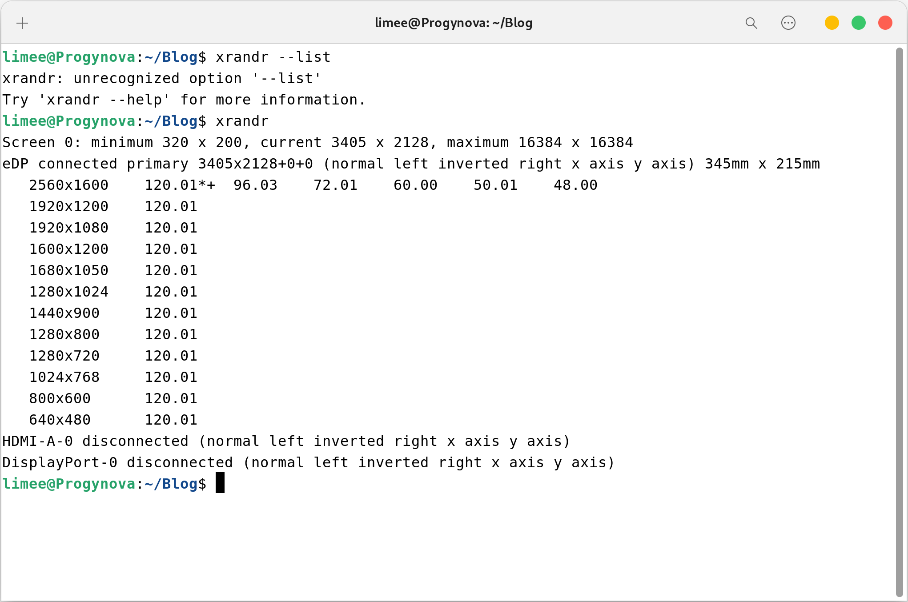
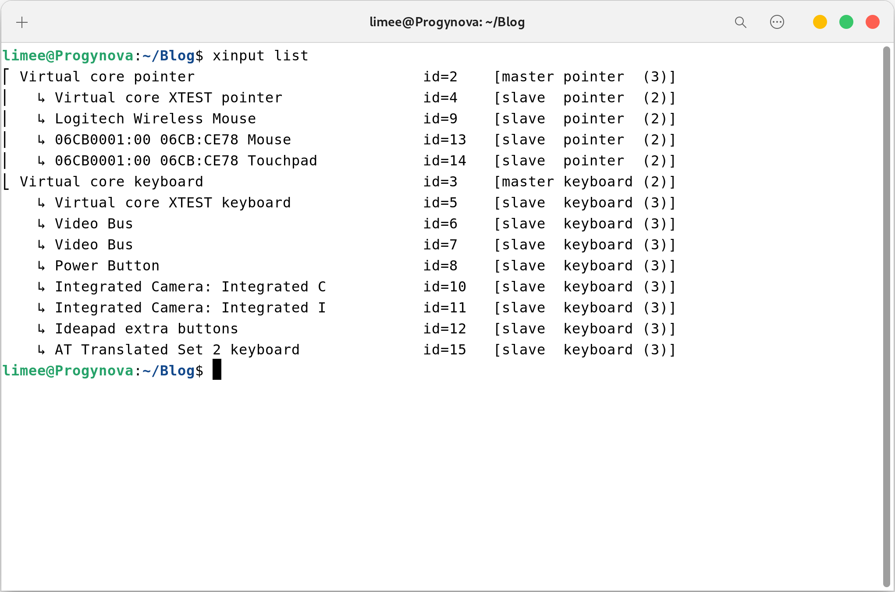
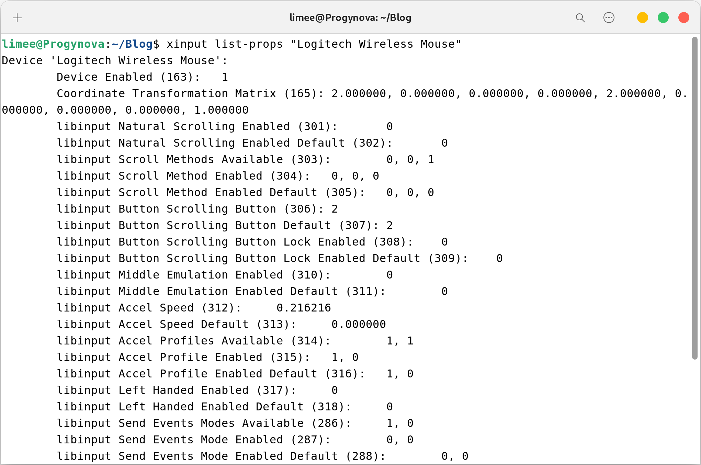

注意
启用分数缩放
首先进入 Gnome 的设置，将整数缩放调整为看起来偏大的值，比如 200%。
执行 xrandr 查看当前显示器，大概可以通过分辨率和刷新率判断，如图所示显示器的名称为 eDP.

现在启用 xrandr 的 「虚拟分辨率」功能：xrandr --output eDP --scale 1.33x1.33，将 eDP 替换为上一步获取到的显示器名称，1.33x1.33（中间是英文字母 x）为分辨率的缩放比例。
缩放比例可以这样计算：
需要缩放比例为 150%，整数缩放比例为 200%，那么分辨率需要缩放 200% / 150% = 1.33
现在缩放看起来就比较正常了。
开机自动应用分数缩放
执行 gsettings set org.gnome.desktop.interface scaling-factor 2 （2 为上 N 步选择的整数缩放比例），将整数缩放比例固化。
创建文件 ~/.config/autostart/hidpi.sh，内容如下（应该知道 1.33 是什么）：
|
|
为其添加可执行权限：sudo chmod +x ~/.config/autostart/hidpi.sh
现在为其配置开机启动
创建文件 ~/.config/autostart/hidpi.desktop，内容如下（username 替换成你的用户名）：
[Desktop Entry]
Name=HiDPI-Configuration
GenericName=HiDPI-Configuration
Comment=Configure HiDPI Fractional Scaling
Exec=/home/username/.config/autostart/hidpi.sh
Terminal=false
Type=Application
X-GNOME-Autostart-enabled=true
然后将这个文件复制到：
sudo cp ~/.config/autostart/hidpi.desktop /usr/share/gdm/greeter/autostart/hidpi.desktop
sudo cp ~/.config/autostart/hidpi.desktop /etc/xdg/autostart/hidpi.desktop
现在重新启动系统，缩放比例应该可以自动设置了。
鼠标过慢？
如果你的鼠标 DPI 不高，那在使用虚拟分辨率后，即使调整设置中的鼠标速度，还是会感觉很慢或者有一种奇怪的感觉。
执行 xinput list 查看当前的输入设备列表，如图所示 Logitech Wireless Mouse （罗技无线鼠标）就是我们需要的（请自行判断自己的设备名）

执行 xinput list-props "Logitech Wireless Mouse" （自行替换设备名），查看此设备可调整的属性。

属性中可见 Coordinate Transformation Matrix 即坐标变换矩阵，调整它即可调整鼠标真正的速度，而不是加速度。
可以接受的值为 9 个小数，默认值应为 1 0 0 0 1 0 0 0 1，在此不研究它的原理，只需要知道第 1 和 5 个数，就是前两个 1 控制了鼠标移动的坐标变换。
只需要将前两个 1 调大，鼠标移动速度就可以变快，故 xinput set-prop "Logitech Wireless Mouse" "Coordinate Transformation Matrix" 2 0 0 0 2 0 0 0 1（仍然是自己替换掉设备名）将 1 改为 2 ，鼠标速度得以恢复正常。
没错这个重启会失效。
拿出上 N 步那个 ~/.config/autostart/hidpi.sh ，把最终的 xinput set-prop "Logitech Wireless Mouse" "Coordinate Transformation Matrix" 2 0 0 0 2 0 0 0 1 复制进去就可以了。
总结
又是一篇水文，但找到这些方法还是要花一段时间的，记录一下也无妨。
正是因为倔强的不使用「处处都是粗糙的边缘」的 KDE ， Gnome wayland 下分数缩放的模糊，才引发了这一堆破事，如果没有强迫症该有多好。
主要就是依靠找到的这两个问答：
Fixing HiDPI fractional scaling on Gnome + Xorg tearing and graphical glitches.
How can I set mouse sensitivity, not just mouse acceleration?